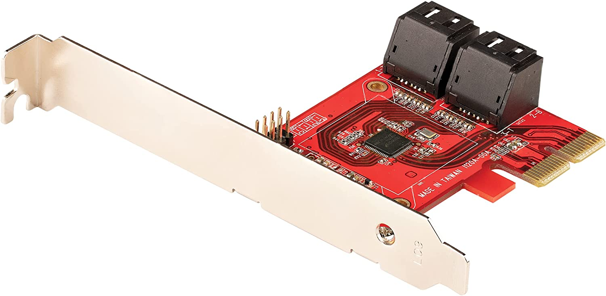
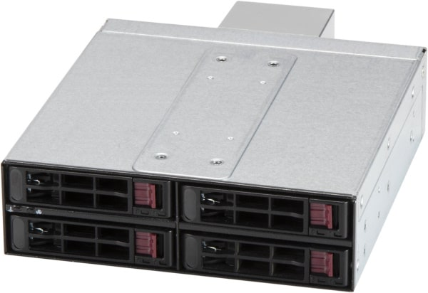
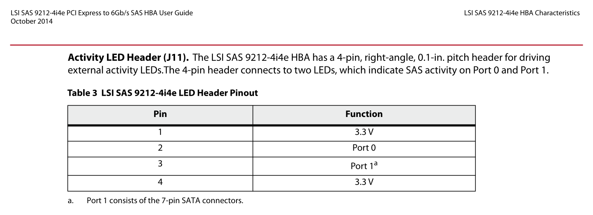

Picture this. You’ve got a supermicro server. It’s got eight hot-swappable 3.5" HDD’s. You want to use all of those for storage, so you buy a nifty add-on that let’s you add four additional 2.5" SSD’s. Those are great for your OS. That’s a great way to keep your data separate. The motherboard only supports eight drives, so you’ll need an HBA for the additional four… What are some catches and things you need to watch out for?
An HBA is a card that talks to both your host computer (usually through a PCI
express port) and to some number of harddrives. (In my case four.) It lets
Linux see the four drives separately as /dev/sda, /dev/sdb, /dev/sdc, and
/dev/sdd. This is exactly what you want because it lets you use Linux mdadm
software RAID. If you use hardware RAID and the controller dies, then you’re in
trouble. With software RAID you merely re-attach the drives anyway you like and
things will keep working like magic.
If you’re booting Linux, you definitely want to be using UEFI. It’s mostly quite easy. You make sure you have magic EFI partitions in the right places, and your motherboard UEFI firmware (formerly what we’d call the BIOS for old booting) will find all of those and let you pick one to boot.
Unfortunately some cards don’t let you boot from them. They need something called UEFI firmware. This might also be called an “option ROM”. Your motherboard also needs to be able to talk to this firmware over PCI-express, and if it finds something it likes there, it can offer up boot options from that device. The “StarTech 4 Port PCIe SATA Expansion Card” that I had did NOT boot from UEFI. Maybe changing the firmware on it could fix this, but I tossed it aside.
|  |
Secondly, you have to enable this feature in your BIOS. Usually it’s on by default though.
Lastly you have to make sure to actually boot from UEFI. Any legacy or CSM modes should be disabled. You want pure-UEFI, no legacy MBR booting here.
I got a different card. It was a 9212-4i, a 4 port SAS/SATA card. They sell this in IT mode or IR mode. The IR mode is for using it as a hardware RAID card. The IT mode is for standard HBA stuff. You can flash the firmware from one version to the other. The hardware is usually the same. I accidentally seem to have ordered the IR version, but somehow it works transparently in what feels like IT mode. Who knows. The chip is a LSI SAS 2008. This is an old chip, but it generally works great. I plug everything in and turn on the machine…
Finally you see beautiful GRUB. Things look like they’re going okay, before you
fail to load the root filesystem and you end up in a useless maintenance shell.
The only useful thing I was able to do there was to run ls -l /dev/disk/by-path/
and see that my drives were not visible. What’s wrong?
When your computer boots, it starts off with a miniature /root/ filesystem and
a kernel image. The kernel image is a file that looks like *vmlinuz* and the
filesystem is something called an initramfs or an initrd. Basically this is
a small operating system that has the minimum amount of stuff inside of it to
load the kernel and any kernel modules you might need to talk to your real root
filesystem. In our situation, it did not contain the magic that we wanted, so it
was unable to find our real root partition which was on the startech HBA! That
magic was the driver (a kernel module) for this new HBA card.
Pop-in a Fedora live USB key. I happened to use the Fedora 37 Workstation image. I boot off of this key, and to my pleasure, when the machine is up, I can see my harddrives! What this means is that the module exists as part of the Fedora kernel, but that it’s not part of the initramfs.
You can search around in dmesg and lsmod (pipe both of these to grep -i)
and eventually you’ll find that the kernel module you want is now called:
mpt3sas. (Or mpt3sas.ko.) Google is your friend too. It’s working, but I
need to get it to be part of my boot process.
To see what’s already in there, you’re supposed to be able to run:
lsinitrd | grep mpt3sas.ko, but when I did, I actually found this file! It
seems I am misunderstanding something here because it definitely wasn’t booting
yet. I mention all of this so you don’t fall for this trap.
Dracut is a tool that runs a bunch of “modules” (not kernel modules) and each of those are used to somehow build what eventually becomes a GRUB and initramfs setup. I’m really not a dracut expert, so assume that this description needs improving.
In any case, we definitely need to tell it about our new kernel module! Add the
following file: /etc/dracut.conf.d/mpt3sas-drivers.conf. You can name it
something different as long as it’s in that directory. I followed the standard
convention. The contents of this file should be:
add_drivers+=" mpt3sas "
If you look carefully, you’ll note that the mpt3sas string is surrounded by
spaces and then quotes. The spaces are required. Secondly, while this is
indeed the name of a kernel module that we’re adding, dracut already has its
own “module” system, so instead it calls these drivers.
Finally run this command to regenerate everything:
# dracut --regenerate-all
It needs to run as root of course. This took about three minutes to run, and in
the end I had new initramfs images! If you don’t want these changes to be
permanent, you can pass the options in on the commandline instead of via the
config directory. The --help flag explains it all very well.
A quick reboot and things are now working perfectly! I’m running software RAID1 for my two OS disks, and the remaining eight drives form a big software RAID6 pool. I suspect that kernel updates should proceed normally and keep building in the kernel module since it’s in my permanent configs.
In my situation, I ended up installed in a bit of a round-about way, but the most likely scenario that you’ll experience is after you’ve installed a new OS via anaconda, on first reboot you will hit the scenario I’ve described above. If the live installer doesn’t even see your drivers, then you’ve got bigger problems, and you’ll have to first install those. The anaconda installer does support adding a “driver disk”, but I’ve luckily never had to go through with that. This video (FYI: not my video) covers that process fairly clearly if you get stuck there.
One unfortunate feature I’m missing: while I’ve got a RAID1 root partition, I
don’t have a redundant set of /boot/ and /boot/efi/ partitions. (The two
magic partitions required to boot UEFI.) I know I could manually copy things
to a secondary one, but I’d love for this sort of thing to be automatic in
dracut and anaconda. I think we’ll somehow eventually get there with UKI’s, but
I am really not the expert there.
What’s that nifty thing? It’s this:
|  |
The main downside is that you need an HBA that supports SGPIO and the card that I have does not seem to. This is so you can “locate” the hard drives with the associated blinky LED’s. Funny enough, this add-on has the standard eight-pin supermicro SGPIO header. SGPIO only needs four pins though. My card actually has a four pin “hdd led” header! I figured I could just connect the correct pins together, but unfortunately from this photo in the manually, it turns out the card only supports plain +3.3v activity LED’s, and only one for each port on the card. (One port for each four HDD’s, cards can have up to eight drives across two ports, so per-drive locate is not possible it seems.)
|  |
More on my SGPIO adventures another day!
I hope you enjoyed this. Please leave me a comment if this taught you something new! I thought I’d write this up, because I couldn’t find anything similar online, and this felt common enough of a problem.
Happy Hacking,
James
You can hire James and his team at m9rx corporation.
You can follow James on Mastodon for more frequent updates and other random thoughts.
You can follow James on Twitter for more frequent updates and other random thoughts.
You can support James on GitHub if you'd like to help sustain this kind of content.
You can support James on Patreon if you'd like to help sustain this kind of content.
Your comment has been submitted and will be published if it gets approved.
Click here to see the patch you generated.
{kind=link}
{kind=link}
{kind=link}
Comments
Nothing yet.
Post a comment